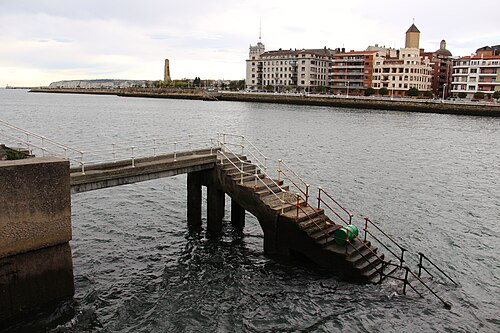
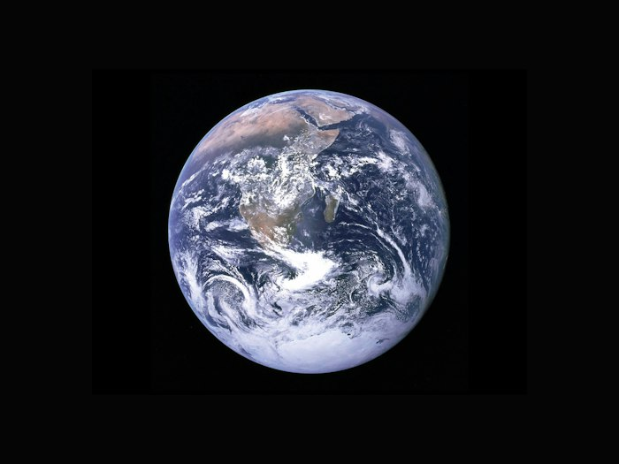

Esaldiaren hasieran
Esaldi berri bat hasten denean, lehen letra handia da.
Gaur jolastuko gara. Euria ari du. Busti gara.Euskara · Begiratu eta ikasi
Bi arau nagusi. Begiratu irudiei eta adibideei.
Esaldi berri bat hasten denean, lehen letra handia da.
Gaur jolastuko gara. Euria ari du. Busti gara.Pertsonen, animalien eta lekuen izenak letra handiz hasten dira.
👧 Ane 🐶 Ttiki · 🏙️ BilboIzen hauek ere letra handiz hasten dira.

Herri, hiri eta herrialdeen izenak.
Jai eta pertsonaia berezien izenak.

Planeten izenak letra handiz hasten dira.
Ikasgaien izenak ere letra handiz has daitezke.
Liburuen, kanten eta artelanen izenburuak.
Idazki baten hasieran eta esaldi berri baten hasieran letra larria erabiltzen da, baita puntuaren, galdera- edo harridura-markaren eta etenpuntuen ondoren ere.
Pertsona- eta pertsonaia-izenak, izengoitiak, animalien izen bereziak eta leku-izenak letra larriz hasten dira: Mikel Agirre, Atxaga, Dolly ardia, Bilbo, Euskal Herria.
Jaiegun eta egun bereziak; izen mitologiko eta erlijiosoak; astroak eta konstelazioak; ikasketa eta ikasgaien izenak; eta santuen izenak maiuskulaz idazten dira: Eguberri, Maiatzaren Lehena, Olentzero, Buda, Jesu Kristo, Lurra, Andromeda, Literatura, Santa Katalina. Izenaren aurreko tituluak ere maiuskulaz doaz: On Joxe Migel Barandiaran, Aita Donostia.
Liburu, aldizkari, tesi, film, kanta, pintura eta eskulturen izenburuak etzanez idazten dira. Ohiko izenburuetan lehen hitza hasten da maiuskulaz, eta izen bereziak bere horretan idazten dira: Haizearen orrazia. Bilduma baten izenburuan, hitz nagusiak maiuskulaz hasten dira, juntagailuak eta postposizioak izan ezik: Euskal Gramatika. Lehen Urratsak-VI. Egunkari eta aldizkarien izenek ere izenburu-arau hori dute.
Sarien izenean, saria hitza xehez idazten da: Nobel saria, Argia saria. Siglak eta zenbaki erromatarrak maiuskulaz idazten dira: EHU, AEB, III. kapitulua. Bi puntuen ondoren zuzeneko aipamena badator, aipamenaren lehen hitza maiuskulaz hasten da: Artzek idatzi zuen: «Hizkuntza bat ez da galtzen...».
Oinarriak: Euskaltzaindia, Letra larrien erabilera euskaraz (1990eko gomendioa), eta EIMA, Letra larriak erabiltzeko irizpideak.
Bilboko itsasadarraren argazkia: Fred Romero, CC BY 2.0. Gainerako argazkiak: Unsplash.
Bi jolas erraz eta inprimatzeko fitxak dituzu.
Jardueretara joan →